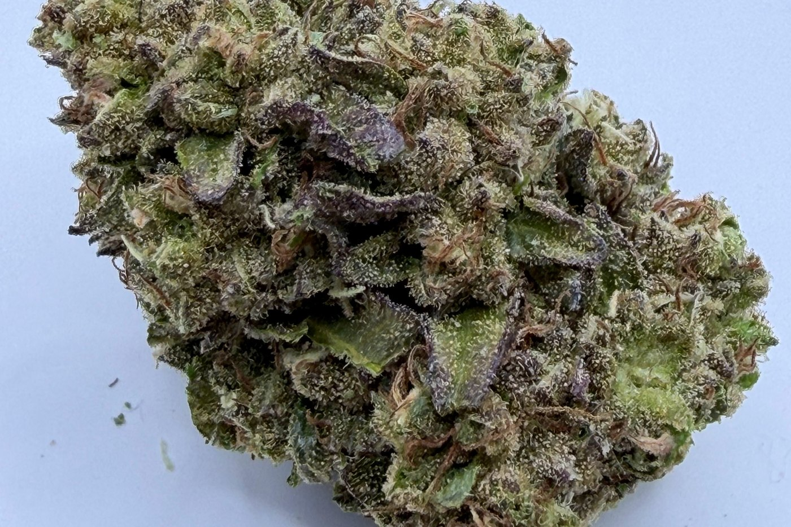

Blog
Why does dry flower resist mold?
Mold needs water. The less water flower holds, the less mold can grow, which is a main reason flower is dried. What matters is how much water is left, and how long the flower stays damp on the way there. Slow drying keeps that window open for days. Faster drying closes it sooner.

Water activity is the number that matters
Growers talk about moisture as a percentage. The number that decides whether mold can grow is a different one, called water activity. It measures how available the water is, on a scale from 0 to 1.
The standard for dry cannabis flower, from ASTM International, sets the range at 0.55 to 0.65. The upper limit is there to limit mold growth.
Drier flower carries less
A study in Frontiers in Microbiology tested more than 2,000 flower samples between 2019 and 2022. Flower dried to a lower moisture level carried lower counts of yeast and mold.
The same study followed flower through hang-drying. The counts rose over the first three days and had fallen by day six.
The slow days are the ones that matter
Researchers in Israel compared two ways of drying. One was the traditional way, in open air over 14 days. The other used closed chambers kept very dry, some of them low in oxygen, at the same temperature.
In the open-air group, about 80% of the samples of one cultivar were heavily infested with Alternaria, a common mold. The chambers cut the drying time by 60% or more.
What it means for Space Weed
Space Weed is frozen within an hour of harvest, and the water is taken out under vacuum while the flower is still frozen. Over 80% of the water leaves.
How much mold any flower carries is a number from a lab test. What the method changes is how much water is left for it.